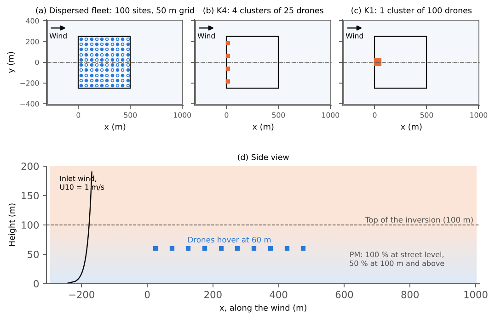
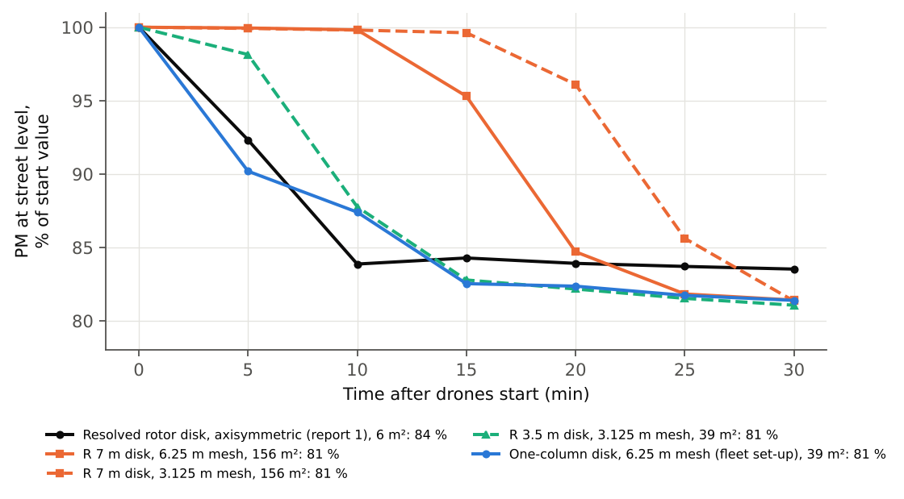
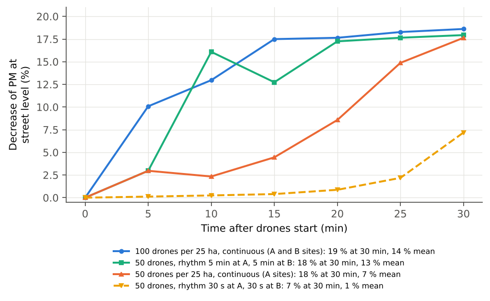
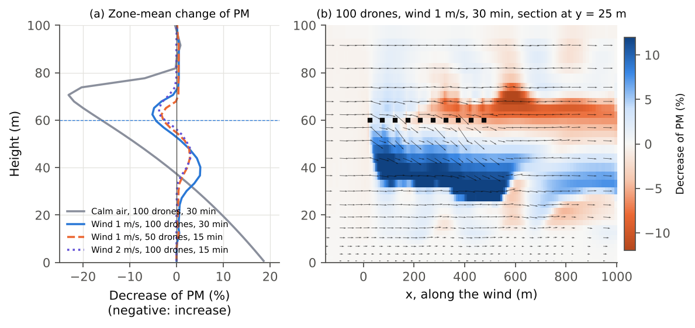
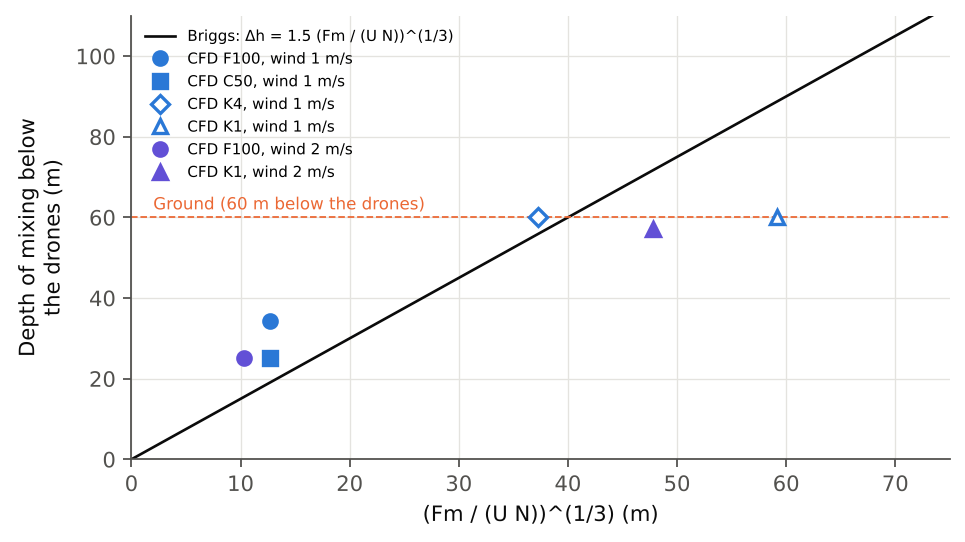
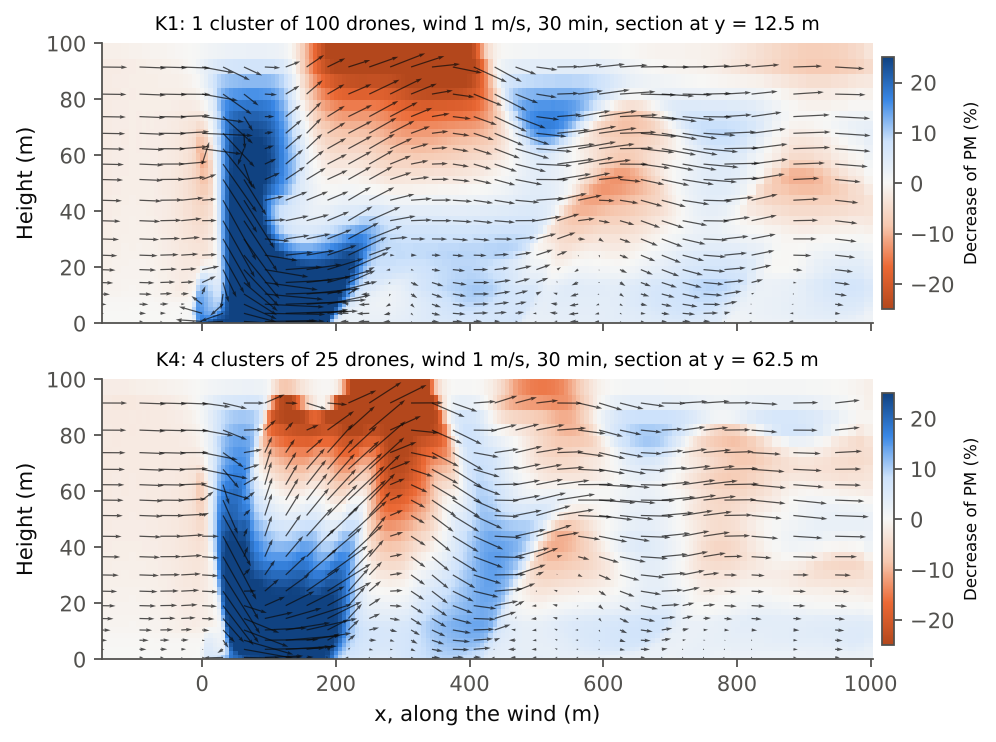
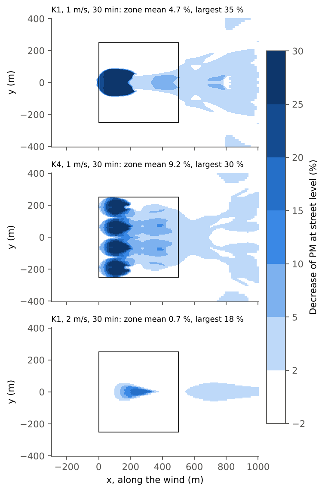
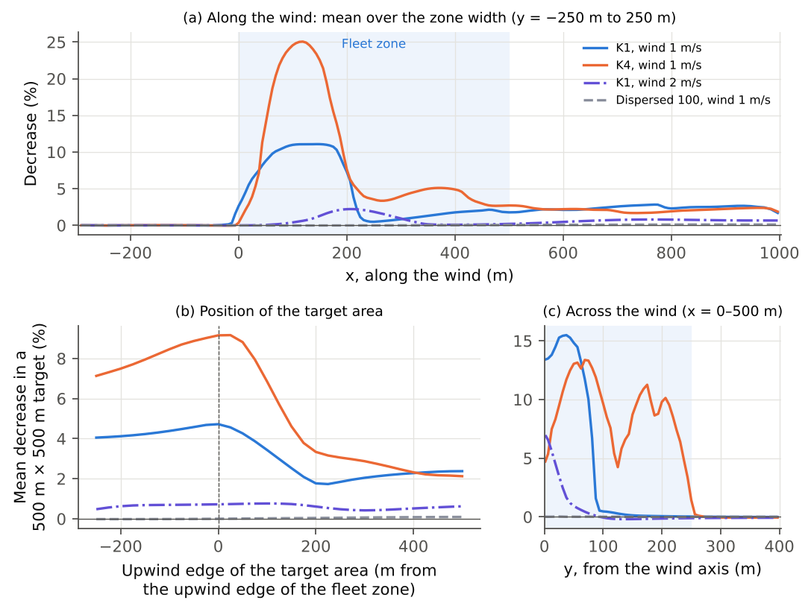
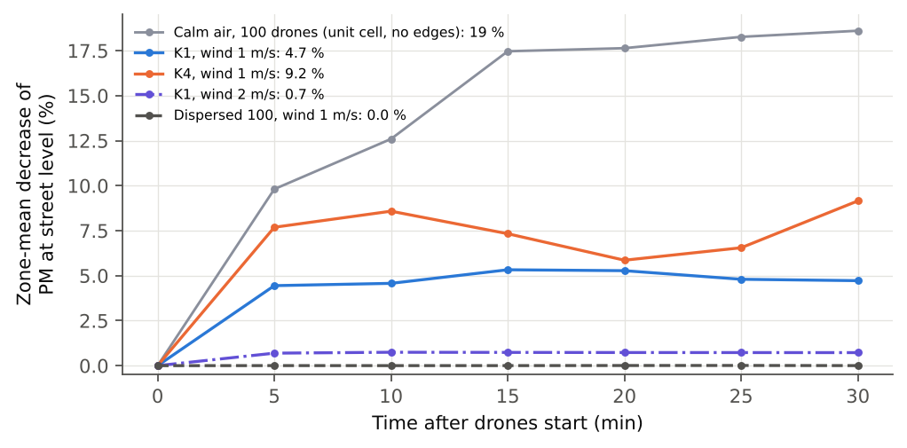

Title: Simulation report on fleet of mixing drones in wind. Drone VS. AQI Report 2.
Author: Noorul Ali, techstudio.art
Correspondence: hello@techstudio.art
Abstract
Introduction
Methods
Results
Discussion
References
Appendix
My previous report, Report 1, calculated the effect of inversion mixing with one drone in a unit cell. A unit cell represents the centre of a very large fleet in calm air. It has no wind and no zone edges. In this report, I simulated a full fleet of heavy drones over a 500 m × 500 m zone in three dimensions, with wind.
Wind changes the result completely. In a light wind of 1 m/s at 10 m height, the jet of each drone bends over. The jets mix only the air from approximately 26 m to 70 m. With drones on a 50 m grid, street-level PM did not change. This was true for 50 and 100 drones and for a wind of 1 m/s and 2 m/s. The Briggs equation for jets in a stable cross-wind gives the same result.
When the drones fly in a tight cluster, their jets join and make one strong jet. One cluster of 100 drones decreased street-level PM by 4.7 % over the zone and by up to 35 % downwind of the cluster. Four clusters of 25 drones gave 9.2 %. The benefit is largest within approximately 200 m downwind of each cluster. As a result, the clusters must be at the upwind edge of the area that we want to protect. At a wind of 2 m/s, the cluster of 100 drones gave only 0.7 %.
I also tested a rhythm in which the drones alternate between two sets of sites. In calm air, a slow rhythm (5 minutes at each set) used the energy of 50 drones. It gave a mean decrease of 13 % over 30 minutes. 100 drones in continuous operation gave 14 %, and 50 drones at fixed sites gave 7 %. A fast rhythm (30 s) gave almost no effect.
These are simulation results. The pilot must measure the wind at drone height before each operation. In calm air, a spread fleet with a slow rhythm is correct. In light wind, the drones must fly in clusters at the upwind edge of the target area. In a wind of 2 m/s or more, inversion mixing gives little benefit.
A. Background
Inversion mixing is one of the three pollution control techniques of the Drone V AQI pilot proposal, Report 1 [25]. On calm winter nights, a temperature inversion keeps PM near the ground in Delhi [1, 2]. Heavy-lift drones hover in the inversion and blow air down. Each jet brings cleaner air from aloft to street level and mixes the polluted layer.
Report 1 calculated that 100 heavy drones at 60 m decrease street-level PM by 16.5 % in 30 minutes. This value comes from a unit cell: one drone in a cell with symmetry walls. A unit cell represents the centre of a very large fleet in calm air. It has no wind and no zone edges.
A real zone has edges, and the air moves. Wind moves the mixed air out of the zone and brings unmixed air into the zone. Wind can also bend the jets. Report 1 estimated that a wind of 1 m/s decreases the effect by approximately one half. This report replaces that estimate with a calculation.
B. Questions of this study
1. Zone edges: how much of the unit-cell effect remains in a zone of 500 m × 500 m with wind?
2. Downwind benefit: how far does the benefit go downwind of the zone?
3. Placement: where must the drones be, relative to the wind and to the area that we want to protect?
4. Rhythm: do adjacent drones that alternate slowly give more mixing for the same energy?
C. A drone fleet is similar to a wind farm
A large group of rotors in the lower atmosphere is a known problem in wind energy. In a wind farm, the first rows get the undisturbed wind. The rows behind them operate in the wakes of the first rows [3, 4]. Studies of very large wind farms use a periodic unit cell for the inner part of the farm [5]. Stable air changes the flow through and above a farm [6]. A drone fleet has the same structure, but the rotors blow down, not along the wind. Frost-protection wind machines in orchards and vineyards use the same principle as inversion mixing [7, 8].
A drone jet that blows down into stable air is a jet in a stable cross-wind. Such jets bend over and stop at a depth that depends on the jet momentum, the wind speed and the stability [9, 10]. This physics controls the results of this report.
A. Flow model
We used the open-source CFD code OpenFOAM (version v1912) and the best-estimate model of report 1. The model solves the time-dependent Reynolds-averaged flow equations (URANS) with the buoyant k-ε turbulence model [11]. The Boussinesq method gives the buoyancy force. In the buoyant k-ε model, stable air decreases the turbulence. Its buoyancy coefficient is 1.5. With this value, the model agrees with the field relations for wind and temperature profiles in stable air [12, 13, 14].
The inversion is the same as in report 1. The potential temperature increases by 5 K from the ground to 100 m. Above 100 m, the air is neutral. PM moves with the air and mixes like heat. As a result, we calculated PM from the potential temperature. At the start, PM is 100 % at street level and decreases to 50 % at 100 m and above.
B. Two changes to the turbulence model
In the first fleet runs, the buoyant k-ε model of OpenFOAM became unstable after 2 to 15 minutes. We found two causes. First, the model has a buoyancy term in the equation for k and in the equation for ε. In the ε equation, a factor makes the term zero in horizontal flow. In unstable air with horizontal flow, k then increases without limit. This occurred in the wakes of the bent jets, where warm air from aloft stays below cooler air. We used the value 1 for this factor in unstable air, as Rodi recommends [15]. In stable air, the model did not change. As a result, the calibration of report 1 is still correct.
Second, where k becomes almost zero, the equation for ε becomes very stiff. This occurred above a drone disk when the disk started. We set lower limits of 1e-6 m²/s² for k and 1e-8 m²/s³ for ε. At these limits, the eddy viscosity is 9e-6 m²/s. This is less than the viscosity of the air, so the limits do not mix the inversion. In the periodic cell, the changed model gave 18.6 % and the original model gave 18.6 % after 30 minutes. The model code is in the repository.
C. Domain and mesh
The fleet zone is 500 m × 500 m. The zone and the fleet are symmetric about the wind axis. As a result, we simulated one half of the domain, with a plane of symmetry on the wind axis (Figure 1). The full domain is 1,300 m long, 806 m wide and 200 m high. The zone starts 297 m downwind of the inlet. The outlet is 503 m downwind of the zone. The sides of the domain are 153 m from the sides of the zone.
In the zone and near it, the cells are 6.25 m × 6.25 m. Near the inlet, the outlet and the sides, the cells are 12.5 m long. The cell height is 1.37 m at the ground, 2.75 m at the drones and 15 m at the top. The mesh has 441,408 cells. The lowest cell layer (0 m to 1.37 m) gives the street-level PM.
D. Wind and boundary conditions
At the inlet, the wind speed, k and ε have the profiles of Richards and Hoxey for a neutral surface layer [16, 17]. The roughness length is 0.1 m. The wind speed at 10 m (U10) is 1 m/s in the main cases and 2 m/s in two tests. At the drone height, the wind speed was 1.5 m/s and 2.8 m/s. The inlet temperature has the inversion profile. The ground is a rough wall. Its wall functions agree with the inlet profiles [18]. The outlet has the hydrostatic pressure of the inversion. The top is a slip wall, and the sides are planes of symmetry [19].
First, the flow operated for 30 minutes without drones. During this time, the wind adjusted to the stable air. Then the drones started and operated for 30 minutes. A reference case continued for the same 30 minutes without drones. All results are relative to the reference case at the same time.
E. Drone model
Each drone is an actuator disk at 60 m. The disk applies a downward force equal to the weight of the drone (50 kg, 490 N) [20]. The heavy drone has 5.9 m² of rotor area. The fleet mesh cannot resolve this area. As a result, each disk is one column of cells: 6.25 m × 6.25 m (39 m²) and 5.5 m high. A cluster is a block of cell columns with the total force of its drones.
A larger disk with the same force makes a slower jet. In calm air, a slower jet goes less deep into stable air [21, 22]. We compared four disk sizes in a periodic cell without wind (Results, section A).
F. Cases
Case | Drones | Layout | Schedule | Wind U10 |
Reference | 0 | None | No drones | 1 m/s, 2 m/s |
F100 | 100 | Grid of 50 m, sites A and B | Continuous | 1 m/s, 2 m/s |
C50 | 50 | Sites A (checkerboard) | Continuous | 1 m/s |
R600 | 50 | Sites A, then sites B | 5 min at A, 5 min at B | 1 m/s |
R60 | 50 | Sites A, then sites B | 30 s at A, 30 s at B | 1 m/s |
K4 | 100 | 4 clusters of 25 at the upwind edge, 125 m apart | Continuous | 1 m/s |
K1 | 100 | 1 cluster of 100 at the upwind edge | Continuous | 1 m/s, 2 m/s |
Calm-air cells | 100 or 50 per 25 ha | Periodic 100 m × 100 m cell, sites A and B | As F100, C50, R600 and R60 | 0 |
Group A and group B make a checkerboard pattern (Figure 1). In the rhythm cases, 50 drones move between the A sites and the B sites. Two groups of 50 drones that take turns give the same flow. A drone that hovers cannot stop its jet, so a change of site is the practical form of a rhythm. In a cluster, the drones are 6 m to 7 m apart. This is possible with satellite navigation that has centimetre accuracy.
We ran C50, R600 and R60 with the original turbulence model for 15 minutes. We stopped them because street-level PM did not change. F100 at 2 m/s also used the original model for 15 minutes. All other cases used the changed model for 30 minutes.

Figure 1: Fleet layouts and domain. (a) Drone sites of group A (filled) and group B (open). (b) Four clusters. (c) One cluster. We simulated the half above the plane of symmetry. (d) Side view with the inversion and the inlet wind.
A. Checks of the drone model
Figure 2 compares four disk sizes in a periodic cell without wind with the resolved disk of report 1. A disk of 156 m² delayed the effect by 10 to 15 minutes: at 15 minutes, the decrease was only 5 %. The one-column disk (39 m²) started at the same time as the resolved disk. After 30 minutes, it gave 18.6 % against 16.5 %. As a result, the fleet mesh calculates approximately 13 % more decrease than the resolved disk. A smaller time step changed the 30-minute result by less than 0.2 percentage points. Without drones, the difference of street-level PM between the changed and the original turbulence models was less than 0.001 %.

Figure 2: Check of the drone disk in a periodic cell without wind. Street-level PM as a percentage of the start value, for four disk sizes and for the resolved disk of report 1.
B. Rhythm in calm air
Figure 3 shows the rhythm cases in calm air. 100 drones in continuous operation decreased street-level PM by 13 % in 10 minutes and 18.6 % in 30 minutes. 50 drones at the A sites gave almost the same value after 30 minutes (17.6 %). But the effect started only after 20 minutes, because the drones are farther apart.
With the slow rhythm (R600), the same 50 drones gave 16 % after 10 minutes and 17.9 % after 30 minutes. The mean decrease over 30 minutes was 12.6 %. This is 88 % of the value for 100 drones (14.3 %). It is 1.8 times the value for 50 drones at fixed sites (7.0 %).
The fast rhythm (R60) gave only 7.2 % after 30 minutes. A jet needs a few minutes to reach the ground. When the drones move every 30 s, the jets stop before they reach the ground. As a result, a useful rhythm has a period of several minutes. A pulsed jet can mix faster than a steady jet. This occurs when the pulse period is near the period of the large eddies of the jet [23]. For a drone jet, this period is approximately 1 s. URANS cannot show this effect, and drones cannot change their thrust this fast.

Figure 3: Rhythm in calm air. Decrease of street-level PM in a periodic cell with the checkerboard of sites A and B. Mean: mean decrease over the 30 minutes.
C. Drones on a 50 m grid in wind
In all cases with drones on a 50 m grid, street-level PM did not change. At a wind of 1 m/s and at 2 m/s, the zone-mean decrease was less than 0.1 %. The largest local decrease was 0.2 %. The rhythm cases R600 and R60 gave the same result as C50.
Figure 4a shows why. In calm air, the jets mix the full layer from the ground to 75 m. In wind, the jets mix only the layer from approximately 26 m to 70 m. Figure 4b shows the jets in the wind. Each jet bends over and stops approximately 28 m below the drone. Below approximately 26 m, the air does not change.

Figure 4: Drones on a 50 m grid. (a) Zone-mean change of PM with height after 30 minutes (15 minutes for C50 and for the wind of 2 m/s). (b) Change of PM and flow in a vertical section through one row of drones (squares), wind 1 m/s, 30 minutes.
The Briggs equation for the rise of a momentum jet in a stable cross-wind is Δh = 1.5 (Fm / (U N))^(1/3) [9, 24]. Fm is the momentum flux of the jet, and U is the wind speed. N is the buoyancy frequency of the inversion (0.041 1/s). For one drone, the equation gives 19 m at 1.5 m/s and 15 m at 2.8 m/s. This is the depth of the jet centre. The lower edge of the jet is deeper, so the CFD depth of approximately 28 m agrees with the equation (Figure 5).
The equation also shows the solution. The depth increases with the cube root of the momentum flux. When N drones fly together, their jets join, and the depth increases by N^(1/3). For a cluster of 25 drones, the equation gives 56 m. For a cluster of 100 drones, it gives 89 m at 1.5 m/s and 72 m at 2.8 m/s. The drones are at 60 m, so a cluster of 100 drones can reach street level in light wind.

Figure 5: Depth of mixing below the drones against the Briggs equation for a jet in a stable cross-wind. Open symbols: the mixing reached the ground.
D. Clusters in wind
Figure 6 shows the clusters. The cluster of 100 drones (K1) makes one strong jet. The jet bends over and reaches the ground. The largest decrease at street level is at x = 144 m. The four clusters of 25 drones (K4) mix the air down to the ground.

Figure 6: Clusters at a wind of 1 m/s after 30 minutes. Change of PM and flow in a vertical section through a cluster. Positive values: PM decreased.
Figure 7 shows the decrease of street-level PM. With K1, the zone-mean decrease was 4.7 %, and the largest local decrease was 35 %. The area with a decrease of more than 10 % was 3.3 ha. The area with more than 5 % was 5.3 ha. With K4, the zone-mean decrease was 9.2 %, and the largest local decrease was 30 %. The areas with more than 10 % and more than 5 % were 7.1 ha and 13.3 ha.

Figure 7: Decrease of street-level PM after 30 minutes. The square is the fleet zone. The clusters are at its upwind edge (left).
Figure 8a shows the effect along the wind. The benefit is small at the upwind edge and largest at x = 144 m for K1 and x = 119 m for K4. The decrease is more than 5 % up to x = 206 m for K1 and x = 388 m for K4. After the jet reaches the ground, the warm jet air rises again, because it is lighter than the cold air near the ground (Figure 6). As a result, the strong benefit is near the cluster. A weak benefit continues downwind of the zone: in the 500 m downwind of the zone, the mean decrease was 2.4 % for K1 and 2.1 % for K4. The benefit outside the zone was 40 % of the total benefit for K1 and 25 % for K4.
Figure 8c shows the effect across the wind. The benefit of K1 is largest on the wind axis and decreases to the sides. In the zone, the central strip (within 125 m of the axis) had 9.5 % and the outer strips had 0.1 %. The four clusters of K4 cover the full width of the zone (10.2 % and 8.3 %). As a result, K4 gave approximately twice the zone-mean benefit of K1.
Figure 8b shows the best position of a 500 m × 500 m target area. For K1, the best target area starts at the clusters, with a mean decrease of 4.7 %. For K4, the best target area starts 25 m downwind of the upwind edge of the zone, with 9.2 %. As a result, the clusters must be at the upwind edge of the area that we want to protect.
At a wind of 2 m/s, the jet of K1 mixed the air down to approximately 3 m. The Briggs equation gives a deeper jet (72 m below the drones). The coarse block of the cluster makes a slower jet than real drones (Discussion). K1 gave 0.7 % in the zone and 0.6 % in the 500 m downwind of the zone. The largest local decrease was 18 %. The best target area starts 100 m downwind of the upwind edge of the zone, with 0.8 %.

Figure 8: Clusters at the upwind edge of the zone. (a) Decrease of street-level PM along the wind. (b) Mean decrease in a 500 m × 500 m target area against its position. (c) Decrease across the wind.
Figure 9 shows the zone-mean decrease against time. With K1, the effect started after approximately 5 minutes. The zone-mean decrease of K4 changed between 6 % and 9 %, because the flow downwind of the clusters is unsteady. The mean over 30 minutes was 6.8 % for K4 and 4.5 % for K1. In calm air, the unit cell gave 18.6 % after 30 minutes and 14.3 % as a mean, on the same mesh.

Figure 9: Zone-mean decrease of street-level PM against time.
Case | Wind U10 | Zone, 30 min | Mean, 30 min | Downwind 500 m | Largest local | Area > 10 % |
Unit cell, 100 drones | Calm | 18.6 % | 14.3 % | - | - | Whole zone |
F100: 100 drones, 50 m grid | 1 m/s | 0.0 % | 0.0 % | 0.1 % | 0.2 % | 0.0 ha |
K4: 4 clusters of 25 | 1 m/s | 9.2 % | 6.8 % | 2.1 % | 30.2 % | 7.1 ha |
K1: 1 cluster of 100 | 1 m/s | 4.7 % | 4.5 % | 2.4 % | 35.1 % | 3.3 ha |
K1: 1 cluster of 100 | 2 m/s | 0.7 % | 0.7 % | 0.6 % | 17.8 % | 0.7 ha |
A. Answers to the four questions
1. Zone edges: in wind, drones on a 50 m grid have no effect at street level. As a result, their edges do not change the result. With a cluster, the benefit has the shape of a plume that starts at the cluster and goes downwind. The sides of the zone between the plumes get little benefit, and four clusters cover the width of the zone better than one cluster. We did not simulate a zone with edges in calm air.
2. Downwind benefit: with a cluster, a weak benefit of approximately 2 % continues for at least 500 m downwind of the zone. After 30 minutes, 40 % (K1) and 25 % (K4) of the total benefit was outside the zone.
3. Placement: measure the wind at the drone height before each operation. In calm air, use the spread fleet of report 1. In light wind, fly the drones in clusters across the wind. Put the clusters at the upwind edge of the area that we want to protect. In our cases, four clusters of 25 drones gave twice the zone-mean benefit of one cluster of 100 drones. The four clusters covered the full width of the zone. A large cluster reaches the ground in a stronger wind than a small cluster. In a wind of 2 m/s or more, even a cluster of 100 drones gives little benefit.
4. Rhythm: in calm air, a slow rhythm of approximately 5 minutes gives almost the effect of 100 drones. It uses the energy of 50 drones (338 kW instead of 677 kW). A fast rhythm of 30 s does not work. In wind, the rhythm does not help drones on a 50 m grid, because their jets do not reach the ground.
B. Limits of the simulations
1. Turbulence model: URANS with the k-ε model calculates the mean flow, not the individual eddies. A study of jets in a stable cross-wind with large-eddy simulation (LES) is the next step [5, 20]. We changed the buoyancy term of the model in unstable air. This change is standard [15], but it adds uncertainty to the wakes of the jets.
2. Drone disk: the fleet mesh calculates approximately 13 % more decrease than the resolved disk in calm air. In wind, the depth of a bent jet depends on its momentum flux, which the coarse disk keeps. The real jets of a cluster are faster than the coarse block, so the real clusters can go deeper.
3. Site: the ground is flat and has a uniform roughness. There are no buildings. The ground does not cool the air during the operation, and there are no new PM emissions. In a real night, the ground continues to cool the air near it, and traffic and other sources continue to add PM. As a result, the benefit far downwind can be smaller.
4. Wind: the wind is steady and has one direction, along the rows of drones. Real night winds change speed and direction. A change of the wind direction moves the area of benefit. The cluster must then move.
5. Domain: we simulated one half of the zone, so the flow is symmetric about the wind axis. The 30-minute operation shows the start of the operation, not a full night.
6. Cluster flight: in a cluster, the drones are 6 m to 7 m apart and fly in the joined jet of their neighbours. The pilot must test the safe distance between the drones and the effect of the joined jet on their thrust.
C. Conclusion
Wind is the most important condition for inversion mixing. In calm air, a spread fleet decreases street-level PM by approximately 19 % in 30 minutes, and a slow rhythm saves half of the energy. In a light wind of 1 m/s, the jets of single drones bend over and do not reach street level. A cluster of drones makes one strong jet that can reach street level. It decreased PM by up to 35 % in a plume downwind of the cluster. Four clusters of 25 drones decreased the zone-mean PM by 9 % after 30 minutes. At 2 m/s, the benefit was small. Report 1 estimated that a wind of 1 m/s halves the effect. For a spread fleet, the effect is zero, and clusters are necessary. The pilot must test these results with measurements of the wind and of PM at different heights.
[1]: Guttikunda SK, Gurjar BR. Role of meteorology in seasonality of air pollution in megacity Delhi, India. Environmental Monitoring and Assessment 184(5):3199-3211 (2011). Link
[2]: Mahrt L. Stably Stratified Atmospheric Boundary Layers. Annual Review of Fluid Mechanics 46(1):23-45 (2014). Link
[3]: Stevens RJAM, Meneveau C. Flow Structure and Turbulence in Wind Farms. Annual Review of Fluid Mechanics 49(1):311-339 (2017). Link
[4]: Porté-Agel F, Bastankhah M, Shamsoddin S. Wind-Turbine and Wind-Farm Flows: A Review. Boundary-Layer Meteorology 174(1):1-59 (2019). Link
[5]: Calaf M, Meneveau C, Meyers J. Large eddy simulation study of fully developed wind-turbine array boundary layers. Physics of Fluids 22(1) (2010). Link
[6]: Allaerts D, Meyers J. Gravity Waves and Wind-Farm Efficiency in Neutral and Stable Conditions. Boundary-Layer Meteorology 166(2):269-299 (2017). Link
[7]: Ribeiro AC, De Melo-Abreu JP, Snyder RL. Apple orchard frost protection with wind machine operation. Agricultural and Forest Meteorology 141(2-4):71-81 (2006). Link
[8]: Battany MC. Vineyard frost protection with upward-blowing wind machines. Agricultural and Forest Meteorology 157:39-48 (2012). Link
[9]: Briggs GA. Chimney plumes in neutral and stable surroundings. Atmospheric Environment (1967) 6(7):507-510 (1972). Link
[10]: Wright SJ. Buoyant Jets in Density‐Stratified Crossflow. Journal of Hydraulic Engineering 110(5):643-656 (1984). Link
[11]: Launder BE, Spalding DB. The numerical computation of turbulent flows. Computer Methods in Applied Mechanics and Engineering 3(2):269-289 (1974). Link
[12]: Businger JA, Wyngaard JC, Izumi Y, Bradley EF. Flux-Profile Relationships in the Atmospheric Surface Layer. Journal of the Atmospheric Sciences 28(2):181-189 (1971). Link
[13]: Dyer AJ. A review of flux-profile relationships. Boundary-Layer Meteorology 7(3):363-372 (1974). Link
[14]: Högström U. Non-dimensional wind and temperature profiles in the atmospheric surface layer: A re-evaluation. Boundary-Layer Meteorology 42(1-2):55-78 (1988). Link
[15]: Rodi W. Examples of calculation methods for flow and mixing in stratified fluids. Journal of Geophysical Research: Oceans 92(C5):5305-5328 (1987). Link
[16]: Richards PJ, Hoxey RP. Appropriate boundary conditions for computational wind engineering models using the k-ε turbulence model. Journal of Wind Engineering and Industrial Aerodynamics 46-47:145-153 (1993). Link
[17]: Hargreaves DM, Wright NG. On the use of the k–ε model in commercial CFD software to model the neutral atmospheric boundary layer. Journal of Wind Engineering and Industrial Aerodynamics 95(5):355-369 (2007). Link
[18]: Blocken B, Stathopoulos T, Carmeliet J. CFD simulation of the atmospheric boundary layer: wall function problems. Atmospheric Environment 41(2):238-252 (2007). Link
[19]: Franke J, Hellsten A, Schlunzen KH, Carissimo B. The COST 732 Best Practice Guideline for CFD simulation of flows in the urban environment: a summary. International Journal of Environment and Pollution 44(1/2/3/4):419 (2011). Link
[20]: Porté-Agel F, Wu YT, Lu H, Conzemius RJ. Large-eddy simulation of atmospheric boundary layer flow through wind turbines and wind farms. Journal of Wind Engineering and Industrial Aerodynamics 99(4):154-168 (2011). Link
[21]: Morton BR, Taylor GI, Turner JS. Turbulent gravitational convection from maintained and instantaneous sources. Proceedings of the Royal Society of London. Series A. Mathematical and Physical Sciences 234(1196):1-23 (1956). Link
[22]: Bloomfield LJ, Kerr RC. Turbulent fountains in a stratified fluid. Journal of Fluid Mechanics 358:335-356 (1998). Link
[23]: Choutapalli I, Krothapalli A, Arakeri JH. An experimental study of an axisymmetric turbulent pulsed air jet. Journal of Fluid Mechanics 631:23-63 (2009). Link
[24]: Hanna SR, Briggs GA, Hosker RP Jr. Handbook on atmospheric diffusion. Office of Scientific and Technical Information (OSTI) (1982). Link
[25]: Ali N. Drone VS. AQI pilot to lower Delhi AQI. Noorul Ali's Research Dex. (2026). Link
Parameter | Value |
Inversion | Potential temperature +5 K from 0 m to 100 m; neutral above 100 m; N = 0.041 1/s |
PM at the start | 100 % at street level; 50 % at 100 m and above; PM calculated from the potential temperature |
Wind at the inlet | Richards and Hoxey profiles; U10 = 1 m/s and 2 m/s; roughness length 0.1 m; wind at 60 m: 1.5 m/s and 2.8 m/s |
Turbulence model | Buoyant k-ε, Cg = 1.5, turbulent Prandtl and Schmidt numbers 0.7; C3 = 1 in unstable air; k ≥ 1e-6 m²/s², ε ≥ 1e-8 m²/s³ |
Heavy drone | 50 kg, force 490 N, hover at 60 m; hover power 6.8 kW (report 1) |
Drone disk in the fleet mesh | One cell column, 6.25 m × 6.25 m × 5.5 m (39 m²) |
Clusters | K4: 4 blocks of 31 m × 31 m (25 drones each); K1: 1 block of 63 m × 69 m (100 drones) |
Fleet | 100 sites on a 50 m grid over 500 m × 500 m; groups A and B in a checkerboard pattern |
Domain | 1,300 m × 806 m × 200 m; one half simulated (plane of symmetry on the wind axis) |
Mesh | 441,408 cells; 6.25 m horizontal cells in and near the zone; 1.37 m cell height at the ground |
Time | 30 min spin-up without drones, then 30 min of operation; time step set by a Courant number of 1.5 or less |
Computer time | 11 core-hours for the fleet cases (4-core cloud computer) |
All simulation code and data are in the Drone V AQI repository (github.com/Tech-Studio-Art/dronevaqi), in directory plans/sim. The fleet model is plans/sim/cfd/fleet3d.py and the changed turbulence model is in plans/sim/cfd/turbulence.